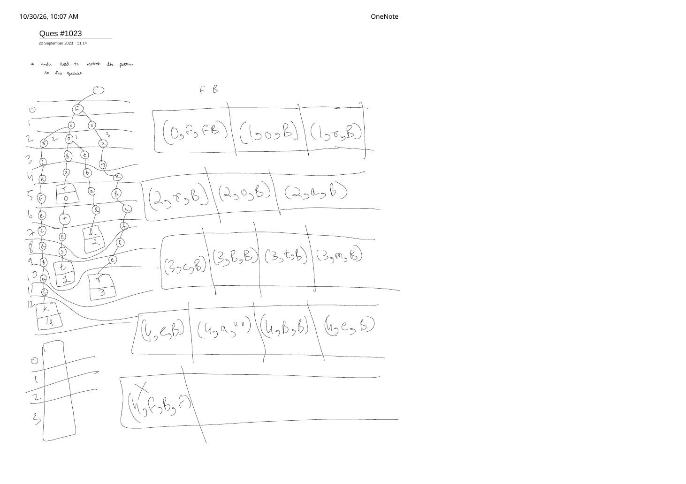

Camelcase Matching via Query-Trie Subtree Pruning (LeetCode 1023)
Expanded from handwritten competitive coding study note: 03_Ques_1023.pdf
Most editorial solutions for LeetCode 1023 (Camelcase Matching) test each query independently with two pointers. In 03_Ques_1023.pdf, the problem is solved through a much richer IDE-autocomplete lens: all queries are compiled into a single case-sensitive Query Trie (tagged with query indices 0..N-1 at their terminal nodes), and pattern is matched down the Trie level by level—sharing common prefixes like "Foo..." and pruning entire subtrees the instant an unmatched uppercase character appears!
1. Problem Statement & Transition Rules
LeetCode 1023 — Camelcase Matching
Given an array of strings queries and a string pattern (both consisting of uppercase and lowercase English letters), return a boolean array answer where answer[i] == true iff queries[i] matches pattern. A query matches pattern if we can insert zero or more lowercase English letters anywhere into pattern so that it equals the query.
Suppose we are at a Trie edge labeled ch while waiting to match pattern[pIdx] (with pIdx == pattern.size() meaning the entire pattern has already been matched). Every edge obeys a strict 3-case state machine:
- Exact Next-Character Match (
pIdx < pattern.size() && ch == pattern[pIdx]): Consumepattern[pIdx]and advance topIdx + 1! Notice this rule fires first whetherchis uppercase or lowercase (greedy matching of a lowercase character inpatternis always optimal because any later occurrence could just be treated as a free lowercase insertion). - Extra Lowercase Character (
islower(ch)): Allowed as an inserted lowercase filler! KeeppIdxunchanged and continue down the child. - Unmatched Uppercase Character (
isupper(ch)andch != pattern[pIdx]): Illegal! Uppercase letters can never be freely inserted, so no string in this child's entire subtree can ever matchpattern—prune the subtree immediately!
2. Handwritten Query-Trie & Level State Table on pattern = "FB"
In 03_Ques_1023.pdf, LeetCode's five sample queries are inserted into one shared Trie with terminal IDs 0..4:
0: "FooBar"$\to$true1: "FooBarTest"$\to$false(extra uppercase'T'after"FB"is already matched!)2: "FootBall"$\to$true3: "FrameBuffer"$\to$true4: "ForceFeedBack"$\to$false(uppercase'F'in"Feed"fails while waiting for'B'!)
"FB" down the Query Trie: valid leaves with remaining == "" mark ans[id] = true (0, 2, 3), while uppercase mismatches at depth 5 ('F' in ForceFeedBack) and depth 6 ('T' in FooBarTest) prune the rest of their branches immediately.Handwritten Level-by-Level Tuple Trace (depth, edge_char, remaining_pattern)
Reading the exact rows on the right side of 03-ques-1023-p1.jpg:
- Depth 0–1:
(0, 'F', "FB")consumes'F', passing"B"to children(1, 'o', "B")and(1, 'r', "B"). - Depth 2: Lowercase children preserve
"B":(2, 'r', "B"),(2, 'o', "B"),(2, 'a', "B"). - Depth 3:
(3, 'c', "B"),(3, 'B', "B")(matches'B'onFooBar!),(3, 't', "B"),(3, 'm', "B"). - Depth 4:
(4, 'e', "B"),(4, 'a', "")(FooBarnow has empty remaining pattern""!),(4, 'B', "B")(FootBallmatches'B'!),(4, 'e', "B"). - Depth 5: On
ForceFeedBack,(4, 'e', "B")steps onto uppercase'F'—drawn as(5, 'F', "B")with a bigX! Because'F' != 'B'and'F'is uppercase, levels $6 \dots 12$ ("eedBack", leaf4) are never visited!
3. When Does Query-Trie Beat Per-Query Two Pointers?
- Single-Pattern Batch (Standard LeetCode 1023 Call): A direct two-pointer scan per query runs in $O\left(\sum |Q_i|\right)$ time and $O(1)$ extra space (no Trie allocation overhead).
- Repeated Pattern Queries on a Fixed Dictionary (Real IDE Symbol Search): When an editor indexes $50{,}000$ class/method names once and answers keystroke-by-keystroke patterns (
"F","FB","FBT"), the Query Trie wins decisively: shared prefixes are traversed once, and any uppercase mismatch near the root prunes thousands of symbols in $O(1)$!
4. C++ & Python Implementations (Both Approaches)
#include <bits/stdc++.h>
using namespace std;
// Approach 1: Handwritten Query-Trie + Subtree-Pruning DFS
class SolutionTrie {
struct TrieNode {
// 52-letter mapping or compact map for 'A'-'Z' and 'a'-'z'
int next[52];
vector<int> queryIds;
TrieNode() { fill(begin(next), end(next), -1); }
};
static int charIdx(char ch) {
return isupper(static_cast<unsigned char>(ch)) ? (ch - 'A') : (26 + (ch - 'a'));
}
static char idxChar(int idx) {
return idx < 26 ? static_cast<char>('A' + idx) : static_cast<char>('a' + (idx - 26));
}
vector<TrieNode> pool;
void dfs(int u, const string& pat, int pIdx, vector<bool>& ans) const {
// Terminal queries at node `u` match iff the entire pattern has been consumed!
if (pIdx == (int)pat.size()) {
for (int id : pool[u].queryIds) {
ans[id] = true;
}
}
for (int c = 0; c < 52; c++) {
int v = pool[u].next[c];
if (v == -1) continue;
char ch = idxChar(c);
if (pIdx < (int)pat.size() && ch == pat[pIdx]) {
// Rule 1: Consume next pattern character (uppercase or lowercase)
dfs(v, pat, pIdx + 1, ans);
} else if (c >= 26) {
// Rule 2: Extra lowercase character -> skip without advancing pIdx
dfs(v, pat, pIdx, ans);
}
// Rule 3: Unmatched uppercase character (c < 26) -> PRUNE entire subtree!
}
}
public:
vector<bool> camelMatch(vector<string>& queries, string pattern) {
pool.assign(1, TrieNode()); // Root = 0
for (int i = 0; i < (int)queries.size(); i++) {
int cur = 0;
for (char ch : queries[i]) {
int c = charIdx(ch);
if (pool[cur].next[c] == -1) {
pool[cur].next[c] = (int)pool.size();
pool.emplace_back();
}
cur = pool[cur].next[c];
}
pool[cur].queryIds.push_back(i);
}
vector<bool> ans(queries.size(), false);
dfs(0, pattern, 0, ans);
return ans;
}
};
// Approach 2: Space-Optimal O(1)-Aux Two-Pointer Scan (for single-pattern calls)
class SolutionTwoPointers {
static bool matches(const string& q, const string& pat) {
int p = 0;
for (char ch : q) {
if (p < (int)pat.size() && ch == pat[p]) {
p++;
} else if (isupper(static_cast<unsigned char>(ch))) {
return false; // Unmatched uppercase letter!
}
}
return p == (int)pat.size();
}
public:
vector<bool> camelMatch(vector<string>& queries, string pattern) {
vector<bool> ans;
ans.reserve(queries.size());
for (const string& q : queries) {
ans.push_back(matches(q, pattern));
}
return ans;
}
};from collections import deque
from typing import List
class Solution:
def camelMatch(self, queries: List[str], pattern: str) -> List[bool]:
# Build case-sensitive Query Trie storing terminal query indices
root = {"children": {}, "ids": []}
for i, q in enumerate(queries):
node = root
for ch in q:
if ch not in node["children"]:
node["children"][ch] = {"children": {}, "ids": []}
node = node["children"][ch]
node["ids"].append(i)
ans = [False] * len(queries)
m = len(pattern)
# Level-by-level BFS matching the handwritten tuple table (node, p_idx)
queue = deque([(root, 0)])
while queue:
node, p_idx = queue.popleft()
if p_idx == m:
for q_id in node["ids"]:
ans[q_id] = True
for ch, nxt in node["children"].items():
if p_idx < m and ch == pattern[p_idx]:
queue.append((nxt, p_idx + 1))
elif ch.islower():
queue.append((nxt, p_idx))
# Uppercase mismatch is pruned automatically!
return ans5. Complexity Proof & Edge Cases
- Unique State Property in Query-Trie DFS/BFS: Notice that for any Trie node $u$, the prefix string from
rootto $u$ is fixed—sopIdxat node $u$ is uniquely determined! Every Trie node is visited at most once during the entire search (and pruned subtrees are visited zero times). - Time Complexity: Building the Trie takes $O\left(\sum |Q_i|\right)$, and the pruned traversal visits at most the number of Trie nodes $\le \sum |Q_i|$, giving $O\left(\sum |Q_i|\right)$ total time.
- Space Complexity: $O\left(\sum |Q_i|\right)$ for the Query Trie (or $O(1)$ auxiliary space with Two Pointers).
- Key Edge Cases:
- Lowercase letters inside
pattern(e.g.,query = "FooBar",pattern = "FoBa"): Checkingch == pat[pIdx]beforeislower(ch)ensures the first'o'greedily satisfiespat[1] = 'o'while the second'o'is skipped as a free lowercase insertion! - Duplicate queries in
queries: Usingvector<int> queryIds(rather than a singleint id) ensures that ifqueries[0] == queries[3] == "FooBar", both indices are markedtrue. - Query ends before
patternfinishes (e.g.,query = "Foo",pattern = "FB"): At the leaf of"Foo",pIdx == 1 < 2, soans[id]staysfalse.
- Lowercase letters inside
From the Handwritten Notes
View original handwritten page — LeetCode 1023: Camelcase Matching (Query Trie & Level State Table on "FB")


0..12, leaf IDs 0..4, and level-by-level state table pruning mismatched uppercase branches with X.